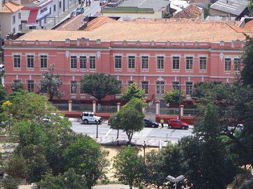

- COLÉGIO ESTADUAL REGENTE FEIJÓ
- ACAUAN E DAVI
O Colégio Estadual Regente Feijó é uma escola pública brasileira de ensino médio e profissional, localizada no município de Ponta Grossa. O colégio recebeu autorização de funcionamento em 21 de fevereiro de 1927, através do Parecer nº 11, publicado no Diário Oficial da União nº 5052, de 5 de março de 1927 e recebeu o nome em homenagem a Diogo Antônio Feijó.
